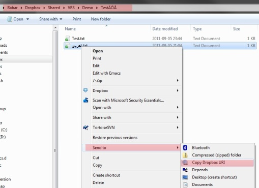
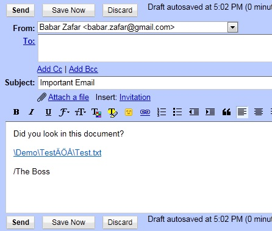
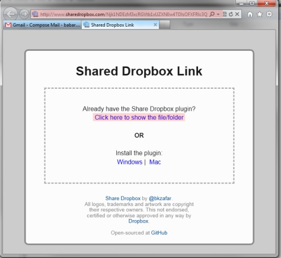
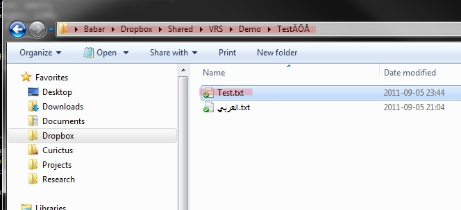
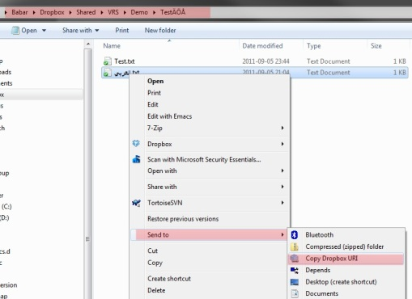
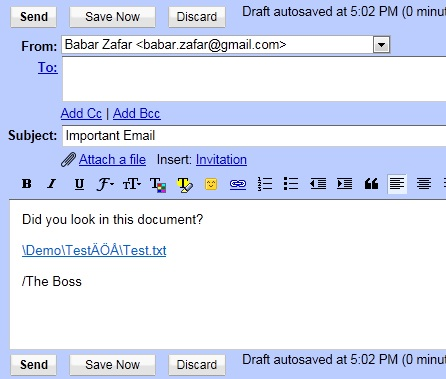
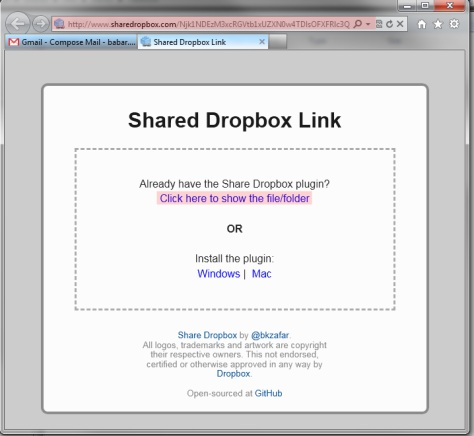
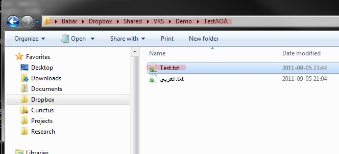

Share Dropbox URI
Working in a team-environment with shared folders? Used to manually typing
file locations or doing the copy/paste routine when you need to point
someone to a specific document?
We fixed that.
Install a plugin which allows you to right-click on a file or directory in a shared Dropbox folder and create a secure link which you can share with people on your team.
   
You can paste the link in Gmail or share via IM and the reciever will be presented with a Finder/Explorer window with the file or folder selected when he/she clicks on it.
Install the plugin:
Windows (beta) | Mac (alpha)
We fixed that.
Install a plugin which allows you to right-click on a file or directory in a shared Dropbox folder and create a secure link which you can share with people on your team.
   
{kind=link}
{kind=link}
{kind=link}
{kind=link}
You can paste the link in Gmail or share via IM and the reciever will be presented with a Finder/Explorer window with the file or folder selected when he/she clicks on it.
Install the plugin:
Windows (beta) | Mac (alpha)
OS X Lion (10.7) required for the Mac version.
Share Dropbox by @bkzafar.
All logos, trademarks and artwork are copyright their respective owners. This not endorsed, certified or otherwise approved in any way by Dropbox.
Open-sourced at GitHub
All logos, trademarks and artwork are copyright their respective owners. This not endorsed, certified or otherwise approved in any way by Dropbox.
Open-sourced at GitHub